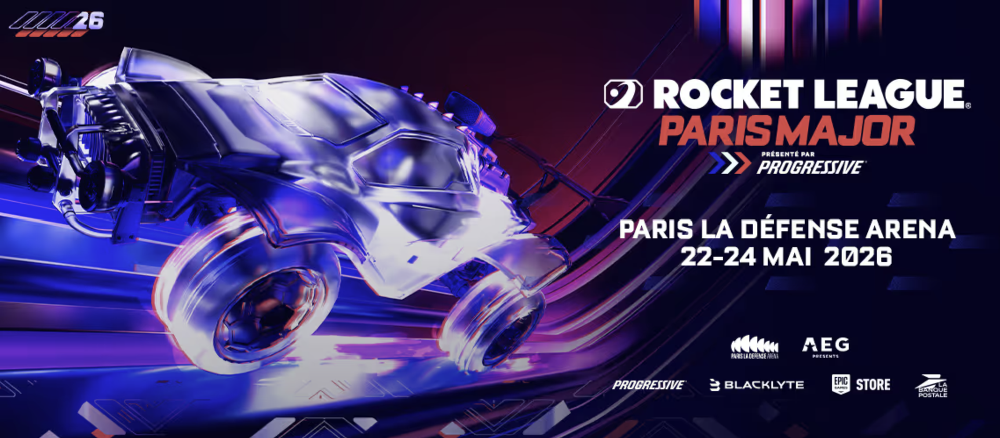

Major 2 des RLCS 2026 à Paris Billets disponibles à partir du 11 février

Après la réponse incroyable qu'a reçue la saison 21 de Rocket League, nous avons le plaisir d'apporter les RLCS dans la ville qui les a inspirés. Du 20 au 24 mai, quelques-unes des meilleures équipes de Rocket League au monde s'affronteront pare-choc contre pare-choc à Paris pour se partager une cagnotte de 345 000 $ USD et une place cruciale pour le Rocket League World Championship 2026 !
L'enthousiasme des fans français au World Championship 2025 à Lyon-Décines a été si grand que ce Major réunira les fans pour trois jours au lieu des deux habituels. Les 22, 23 et 24 mai, les événements se dérouleront en direct à la Paris La Défense Arena, le plus grand complexe d'événementiel couvert en Europe.
Les billets seront mis en vente sur Ticketmaster le 12 février à 10h (CET). Inscrivez-vous avant le 10 février pour recevoir un lien de prévente exclusive afin de pouvoir participer à la prévente qui aura lieu le 11 février. Ce sera votre première chance de vous assurer votre place préférée, mais aussi la meilleure chance d'obtenir des billets.